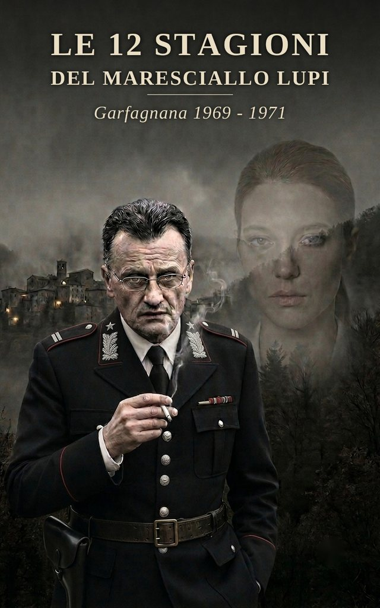

Le 12 stagioni del maresciallo Lupi
Romanzo in italiano
Include il racconto premio speciale della giuria a Lucca Noir 2026
Garfagnana, 1969-1971. In una terra di pietra, nebbia e castagni, i silenzi pesano più delle parole. Non è ostilità, è un modo antico di difendere ciò che si ama. Il maresciallo Armando Lupi lo sa bene. Porta con sé il peso di un passato che non lo abbandona, e un libro di poesie che è l’unico filo che lo lega a Belinda, una ragazza che “sente le voci” e che il mondo ha rinchiuso. Mentre l’Italia fuori cambia, travolta dal vento del Sessantotto, dai primi anni di piombo, dalla droga e dai sequestri, Lupi scava nelle viscere di un paese che non vuole essere svegliato. Tra omicidi ancestrali, riti di paese e l’ombra di un male nuovo che arriva dalla città, il maresciallo Lupi si troverà a dover decidere cosa valga di più: la pace di un paese o il “cuore resinoso” dell’uomo.
In fase di pubblicazione